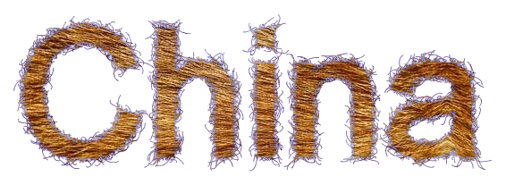
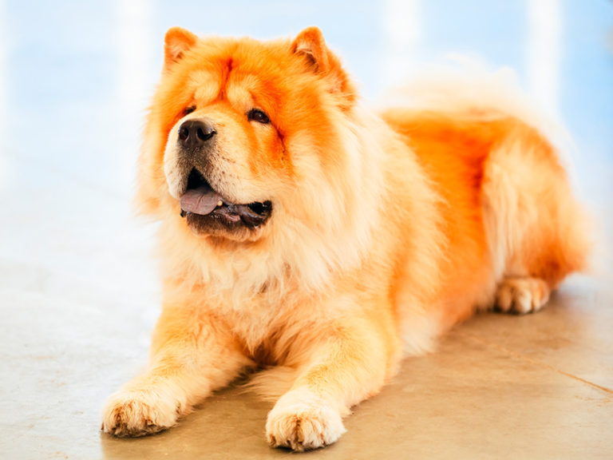
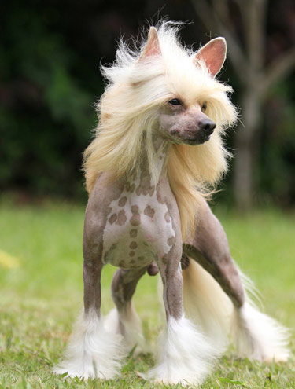

Chow-Chow
Esta raça foi utilizada para várias funções, como por exemplo para luta de cães, cão de guarda e cão de trenó. Na China estes cães são chamados de Songshi Quan, que significa literalmente "cão-leão-empolado". São cães independentes, leais, reservados, silenciosos e ainda são territorialistas e dominantes. São cães de temperamento forte, por vezes considerados teimosos, e necessitam de um dono experiente.
| Expectativa de Vida | Altura | Peso | |
|---|---|---|---|
| Mínimo | 12 Anos | 45 cm | 20 kg |
| Máximo | 15 Anos | 56 cm | 25 kg |
Cão de Crista Chinês
Existem dois tipos distintos desta raça: o “Deer Type”, vivaz e de forma fina e o “Cobby Type”, de constituição e forma mais pesada. A variedade sem pelo pode ser mais ligada aos humanos, enquanto o Powderpuff tem uma natureza mais independente. Ambos são afetuosos com os familiares e pessoas que conhecem, sorrindo e aproveitando qualquer oportunidade para fazê-los rir. Também são ágeis e podem ser bons em escalada, são brincalhões e adoram estar na rua.
| Expectativa de Vida | Altura | Peso | |
|---|---|---|---|
| Mínimo | 10 Anos | 23 cm | 4 kg |
| Máximo | 14 Anos | 33 cm | 5 kg |
Pug

É um cão equilibrado, feliz, bem disposto, de grande charme e extremamente inteligente. Apesar do seu tamanho pequeno, tem uma personalidade forte, é obstinado, mas raramente agressivo. Considera-se que o Pug é um excelente cão de companhia, afetuoso, companheiro, adequado para famílias com ou sem crianças. Devido ao seu porte robusto, é considerado adequado para as crianças, sendo capaz de acompanhar as brincadeiras sem grandes riscos ao seu físico de porte pequeno.
| Expectativa de Vida | Altura | Peso | |
|---|---|---|---|
| Mínimo | 12 Anos | 35 cm | 6 kg |
| Máximo | 14 Anos | 40 cm | 8 kg |